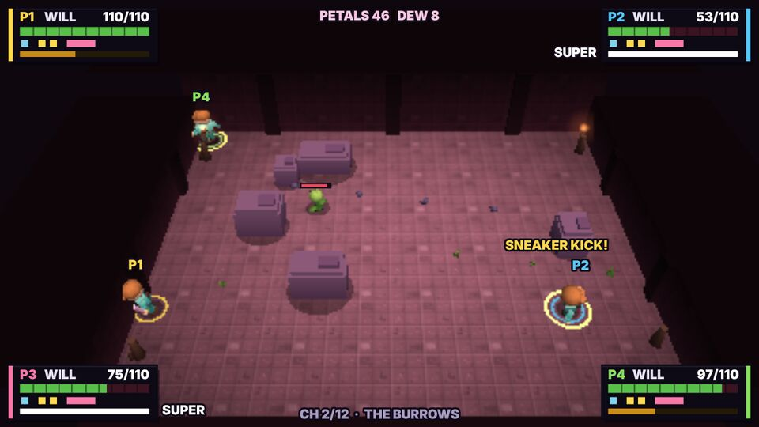
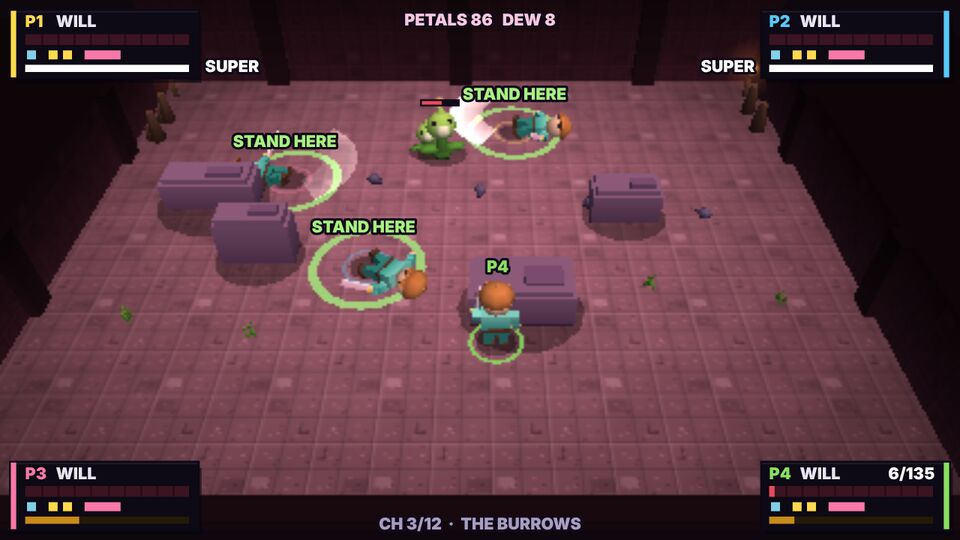
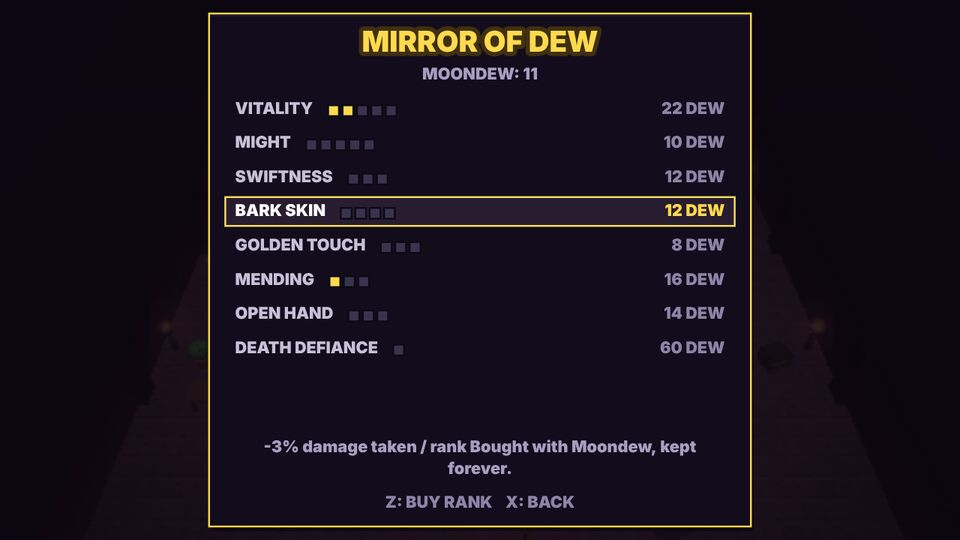
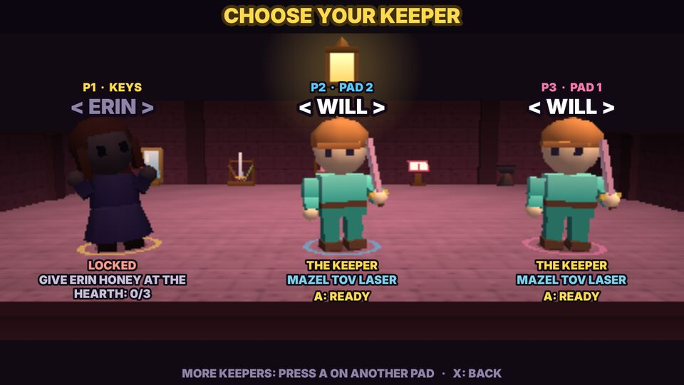
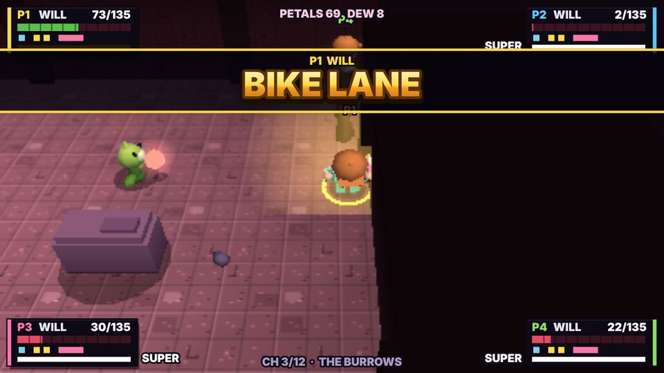

Game night at Mo's has a cast. Keys (that's me, on keyboard) carries. Dee on pad is solid. Gramps thinks the shoulder buttons are decorative. And the Latecomer always shows up when the pizza's half gone. ROOTDEEP 64 says on the box it's built for exactly this crowd, so I went in hopeful.

The good news comes first. Joining is instant. First device to press a button is Player 1, every other pad presses A and a big "PLAYER 2 JOINED" banner pops up, and the game even lets two people share one keyboard (arrows plus comma for one, WASD plus Z for the other). Three pads hitting A on the same frame? All three got in. The hub, the Hearth, is a warm little voxel living room full of chatty NPCs, and when several of you crowd around the stations, each interact prompt stacks at the bottom in that player's colour: "A: ARMORY" in Dee's blue, "Z: ERIN" in my yellow. That's smart couch design. Every new room lines all four of you up in a neat row too, so nobody spawns lost.

Reviving is the best thing here. Go down and the screen yells "P3 IS DOWN — STAND OVER THEM!", a big green STAND HERE ring appears on the body, and a second or two later you get "P3 IS BACK UP!" Gramps went down in Chapter 3, Dee stood on him and got chewed up doing it, and then Gramps (who was just standing around anyway) revived her. The couch cheered. Shared rewards help the weak player too: Heart doors, fountains and boons apply to the whole party, so Gramps never fell hopelessly behind.

Then the night started going sideways.

Everybody is the same kid. Four teal-shirted, orange-haired Wills, told apart only by a floating "P2" tag and a coloured ring at their feet. The other three keepers are locked behind unlock goals that none of us could work out how to meet in an hour (we had four honey, and Erin still said 0/3). Move as a pack and the four Wills stack into one sprite with one tag. Wander into a corner and you vanish under somebody else's HUD panel. In one shot, green P4 is standing under pink P3's health bar while P3 stands under P4's. Walk behind the dark foreground walls and you're simply gone. "Where am I?" got asked more than "what does this boon do?"

Every controller drives every menu. I opened the Mirror (the permanent-upgrade shop), and Gramps pressed A on his pad and spent the party's Moondew before I'd finished reading. Pause, boon pick, shop: all one cursor, all four players fighting over it, and nothing on screen says who did what. The button hints follow whoever is Player 1, so pad players get told "Z: BUY" and keyboard players get told "A: READY". And when two of us pressed interact at two different stations on the same frame, neither one opened.
Doors go to whoever touches first. No vote, no "gather here". Twice someone's drifting stick decided our route before we'd agreed. You can also walk your downed friend through a door, and they just pop back up in the next room, which is kind of forgiving and kind of makes the revive drama pointless.
Late arrivals and early exits. The Latecomer pressed A, then Start, mid-run. Nothing happened, and nothing told him why. He sat out the whole run. Wanting to leave is worse. The only drop-out I found is pressing B on the keeper-select screen, and when you do, everyone's player number and colour shuffles. By the end of the night even I, the guy holding all four controllers, had to stop and work out which pad was P3.
The camera picks favourites. When someone goes down, the camera often frames only the living players, so the body (the thing you need to stand on) is off-screen with no arrow pointing to it. When three of us went down, the camera zoomed in tight on the last survivor, who was standing behind a wall at the time. Supers do a flashy letterbox zoom on whoever cast them. Fun the first time, but with four players that's a lot of screen taken away from the other three. And when all four of us fired a super on the same frame, only mine went off.
Four players also felt harder than three. We never beat the first boss, the Grub Mother, in eight tries.
The combat underneath is snappy. Hits, casts, dashes, heavies and specials all work, and the writing is genuinely charming ("THE DEEP SENDS YOU HOME. IT IS BEING POLITE."). This could be a great party game. Right now it's a good solo game that lets your friends watch from inside it.
"ROOTDEEP treats four people like one person with four controllers."